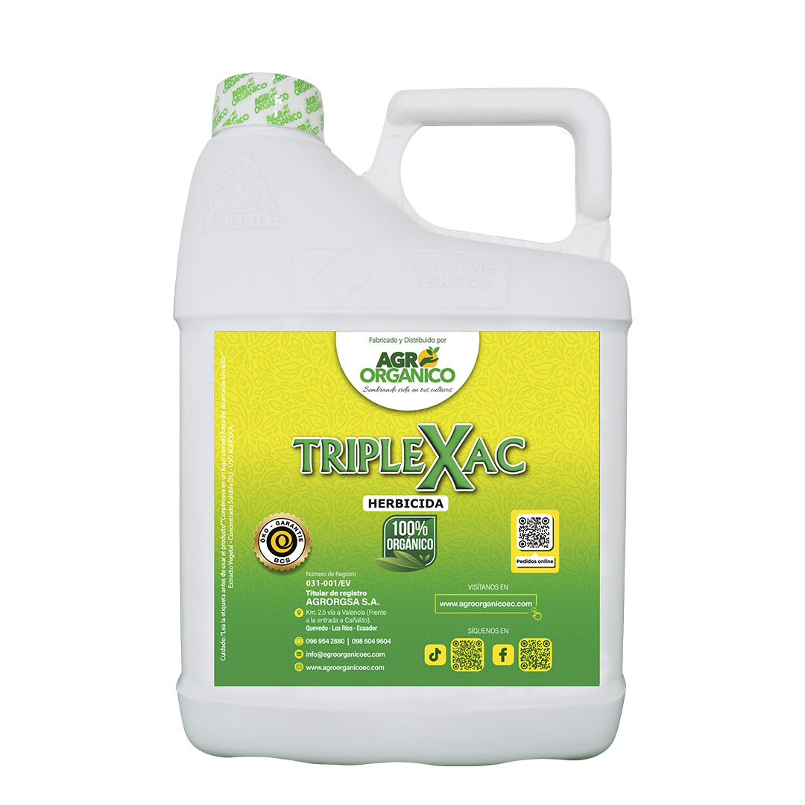

Talk with expert
Talk with expert
Talk with expert
Talk with expert
Talk with expert
Contamos con más de 250 distribuidores a nivel nacional.




"Excelente servicio y productos de alta calidad para mis cultivos."
Agricultor"La mejor opción para el agro en el mercado ecuatoriano."
Distribuidor de Insumos3462@agro_organico 🌱🔍 ¿Tu cultivo necesita ayuda y no sabes por dónde empezar? Hoy te llevamos al campo a un análisis real, donde evaluamos el estado de un cultivo y te compartimos recomendaciones clave que también pueden servirte 👨🌾✨ 💡 Aprende a identificar problemas, mejorar la salud de tus plantas y potenciar tu producción de manera efectiva y orgánica. 📲 Recuerda: si necesitas asesoría personalizada, contáctanos al 0968308676 y recibe guía directa de nuestros técnicos. #AgriculturaOrgánica #CultivosSanos #AsesoríaAgrícola #AgroEcuador #ProducciónAgrícola #CacaoEcuador #BananoEcuador #CampoEcuatoriano #malezas #fincas #cultivocacao #cacaoorganico #AgroOrganico #poda #herbicidas #herbicidaorganico #fertilizacion #FullCacao #Nutrikit #nutricion #Triplexac #TX2
♬ sonido original - Agro Organico
25.6K@agro_organico 🌱 Tu cultivo habla… ¿ya sabes qué te está diciendo? Cuéntanos su estado y recibe una asesoría personalizada para recuperarlo, fortalecerlo y llevar su producción al siguiente nivel… ¡100% orgánico! 💬 Escríbenos al 0968308676 y transforma tus resultados desde la raíz. #AgriculturaOrgánica #CultivosSanos #ProducciónSostenible #AsesoríaAgrícola #AgroEcuador #CacaoEcuador #BananoEcuador #SueloVivo #Agroecología #CampoProductivo 🌱
♬ sonido original - Agro Organico
75.6K@agro_organico “Cuéntanos en qué estado está tu cultivo 🌱 y recibe recomendaciones personalizadas para recuperarlo y potenciar su producción… de manera 100% orgánica.” 💬 Escríbenos al 0968308676 y deja que tus plantas hablen con resultados. #AgriculturaOrgánica #CultivosSanos #ProducciónAgrícola #AsesoríaAgrícola #AgroEcuador #CacaoEcuador #BananoEcuador #FertilidadDelSuelo #Agroecología #CampoProductivo 🌱
♬ sonido original - Agro Organico